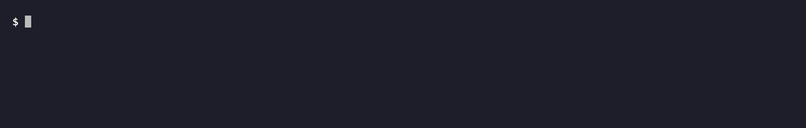
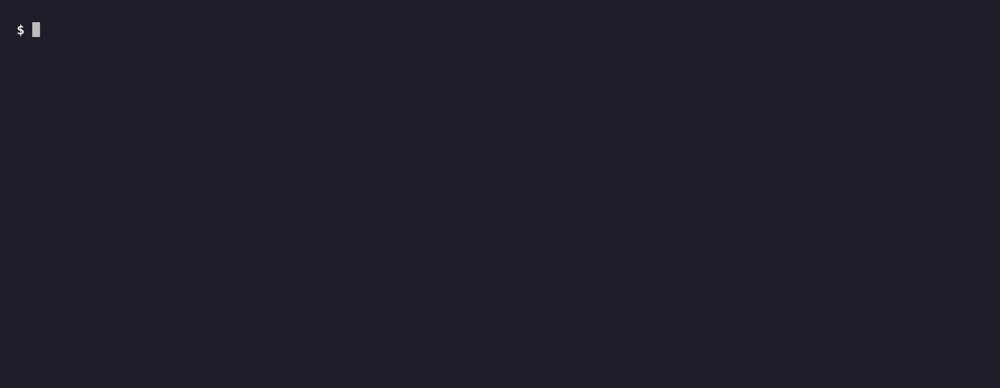

dsx moves files between a Claude Design project and a local directory directly — the file contents never pass through any model's context. Unofficial, single Go binary, stdlib only.
$ dsx clone $PROJECT design pulled 103, unchanged 0, binary 6 (660.1 KB) $ dsx status clean — nothing changed locally, nothing new on the server

How it works
Familiar verbs, and everything else addressed as dsx <noun> <verb>.
Conflicts are decided on bytes, not clocks. It reads Claude Code's existing OAuth token —
no separate login, no MCP server to wire up. One-time: run /design consent in Claude Code.
clonepullpushstatusfetch
diffpinunpindsx <noun> <verb>
The other obsession
Not spending tokens is the first goal. Not losing data is the second, and it shows up everywhere.
Removes only files it can prove dsx pulled and you haven't touched. Untracked → not ours. Edited → a conflict, never a silent delete.
Divergence is decided on content, not timestamps or etags. The both-sides-changed case is a conflict, full stop.
Every file lands temp-then-rename. A killed process never leaves a half-written file — and never a fragment the next run blames on you.
dsx reads Claude Code's OAuth token, never writes, refreshes, or prints it — it won't even wrap it into an error string.

Install
macOS and Linux, on both amd64 and arm64. Nothing to configure.
Spell the tap out; Homebrew 6.0 needs the fully-qualified form to grant trust inline.
If you'd rather build from source what you can read.
Release archives carry GitHub build attestations — verify before you unpack.
Read this first
The Claude Design endpoint is undocumented and makes no promises. dsx was built by probing it and pinning every claim with a live test against the real server — but a server deploy can still break it. It is not affiliated with or endorsed by Anthropic. The protocol notes, the threat model, and the design decisions that were considered and declined are all in the repo: PROTOCOL.md · SECURITY.md. For the story of how that protocol was recovered — and the three facts I guessed wrong first — read the build log.